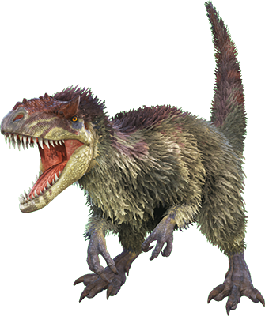

The Yutyrannus saevus is believed to be related to the Tyrannosaurus rex, but it is noticeably different upon first glance. Feathered creatures are not necessarily viewed as dangerous predators in the same light as other theropods. However, the Yutyrannus strikes fear into even the Island's most skilled hunters. There are few wild predators that are able to pack-hunt alongside the generally hostile Carnotaurus, like the Yutyrannus does, with such ease. It is also the only creature I've seen to consistently induce a state of panic in opponents with its roar. Upon hearing it, most creatures in the area will flee for safety